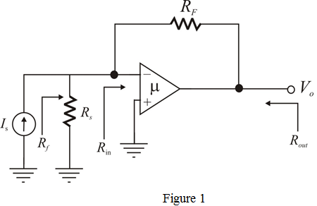
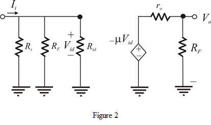
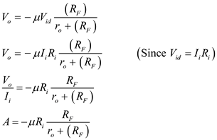
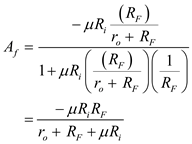

Define closed loop gain of the amplifier.
The closed loop gain of the amplifier is,
The loop gain  is large.
is large.
Substitute for in the equation.
…… (1)
Refer to the circuit diagram of voltage amplifier in Figure P10.56 in the textbook.
Convert voltage source to its Norton representation.

Define closed loop gain of the amplifier.
The closed loop gain of the amplifier is,
The loop gain is large.
Substitute for in the equation.
…… (1)
From Figure 1, the voltage is,
Rewrite the equation.
Recall equation (1).
Substitute for and for  in the equation.
in the equation.
Recall the expression for .
Substitute for and for
for .
.
Rewrite the equation.
Hence, the value of feedback resistor is.
is.
A circuit for the shunt-shunt feedback topology as,

Determine the resistance  .
.
From the Figure 2, the voltage  is,
is,

Calculation of the closed loop gain as follows:
as follows:

Substitute for  , for
, for  in equation.
in equation.

Substitute  for
for  , for
, for  , for
, for  ,
,  for
for  ,
, for
for  , for
, for  in equation.
in equation.
Thus, the closed loop gain  is .
is .
Determine the ,
Substitute for  ,
,  for
for  in equation.
in equation.
Therefore, the actual value of is.
Determine the value of input resistance .
.
Substitute for  , for
, for  ,
,  for
for  in equation.
in equation.
Therefore, the value of input resistance is.
Determine the value of output resistance .
.

Substitute for  ,
, for
for  , for
, for  , for
, for  in equation.
in equation.
Therefore, the value of output resistance is.
(c)
Recall the equation.
The amplifier of gain  has an upper frequency of .
has an upper frequency of .
Consider is the frequency of the gain .
Therefore, the frequency of the gain is .